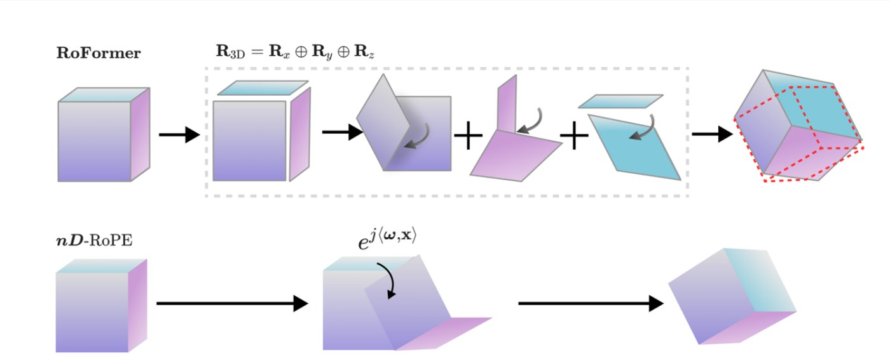
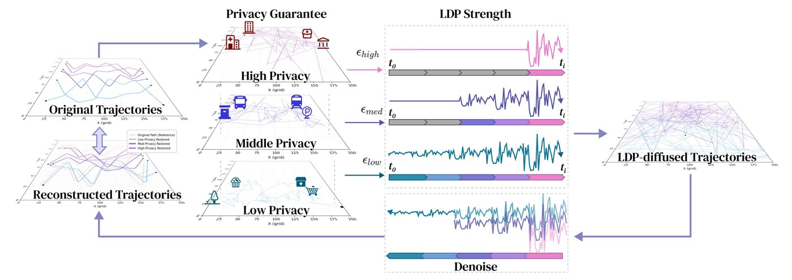
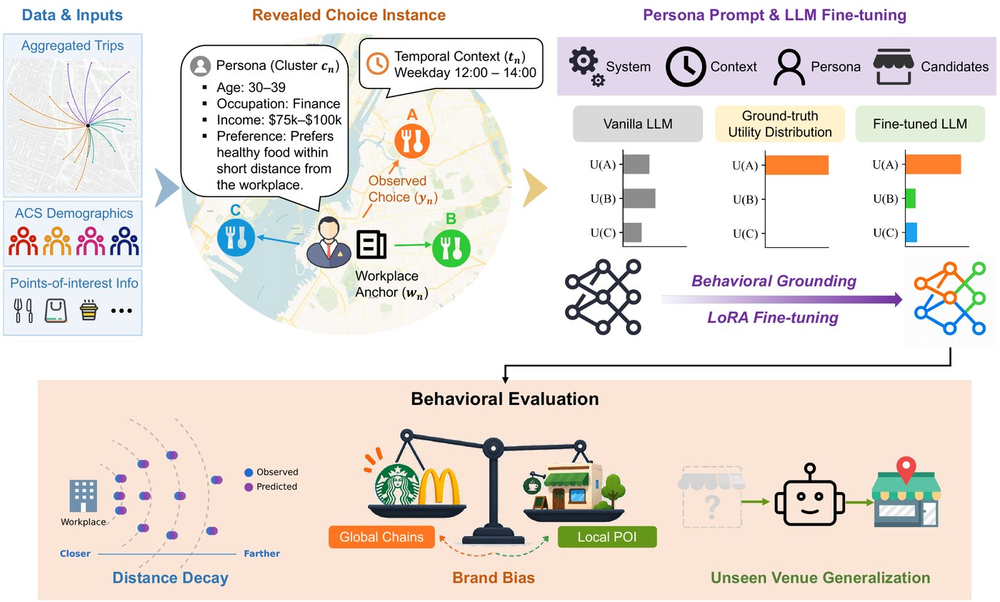
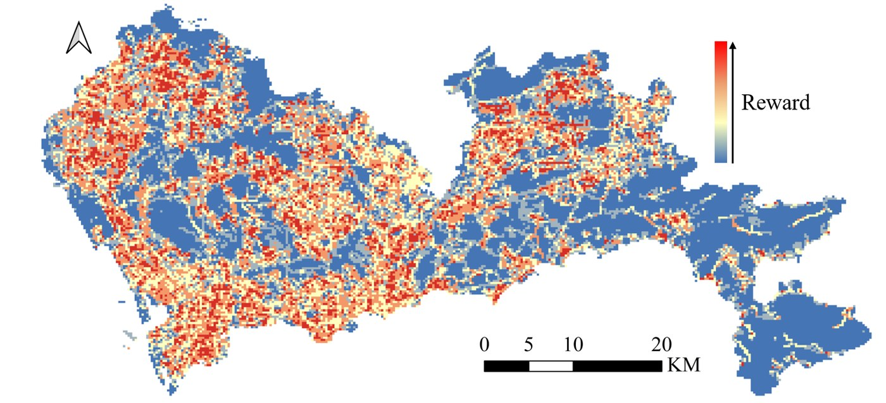
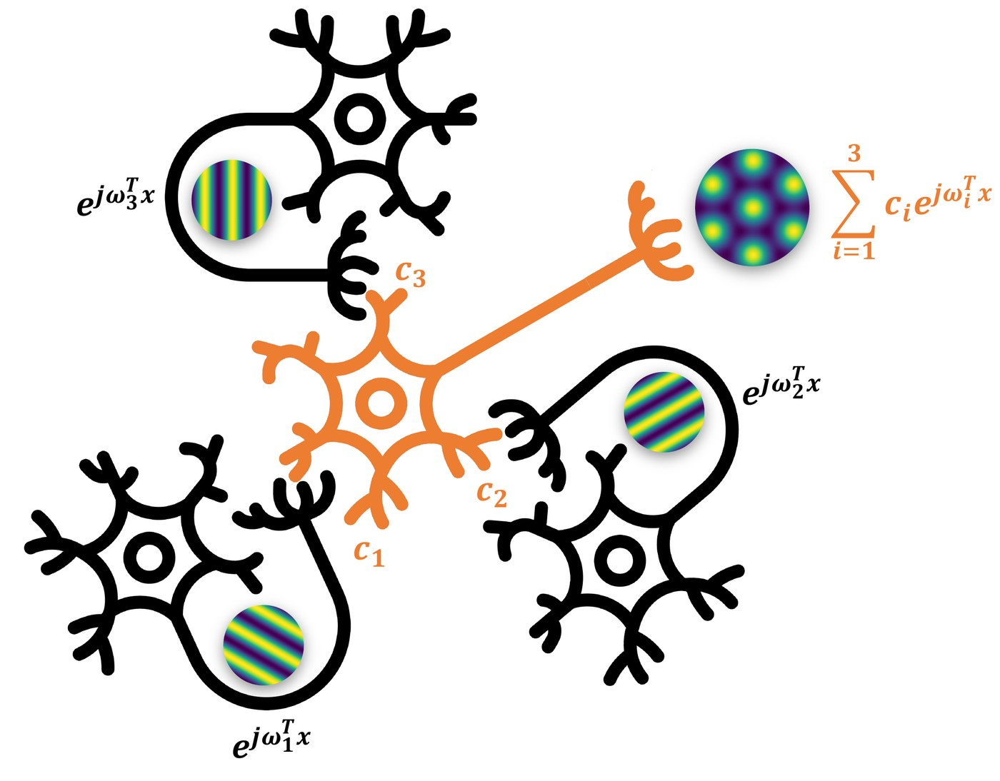
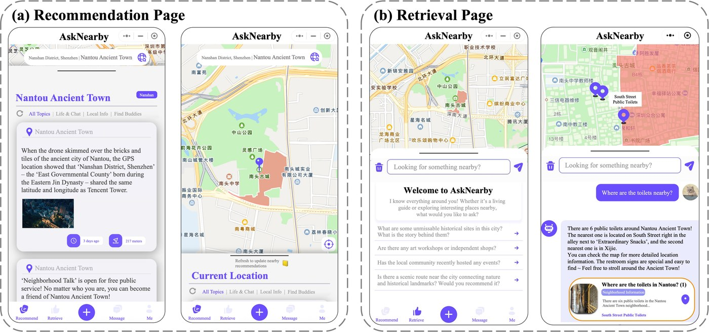
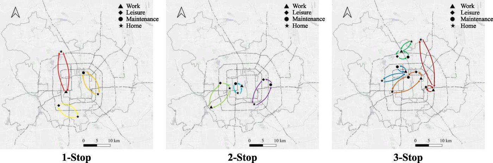
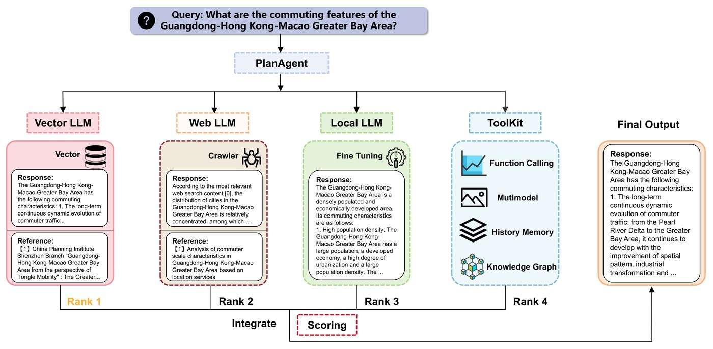

nD-RoPE: A Generalized RoPE for n-Dimensional Position Embedding
Boyang Li, Yulin Wu, Sizhe Xu, Nuoxian Huang, Zhonghang Yuan, Shangyi Guo, Shu Yang, and Takahiro Yabe.
ICML 2026
Ph.D. Researcher, New York University
Human-Centered Technology, Innovation & Design
I study how humans and intelligent agents perceive, represent, reason, and decide in spatial and urban environments. My research spans spatial cognition, urban AI, representation learning, and collective behavior.
My work connects geospatial machine learning, behavioral decision modeling, causal inference, and computational social science to build interpretable models of how people and artificial agents perceive, choose, and coordinate in space.
Modeling cognitive maps, route choice, revealed preferences, and spatial decision structures through inverse reinforcement learning and topology-aware AI.
Designing agent-based and AI-native frameworks for mobility, economic behavior, dependency networks, and emergent coordination in cities.
Developing general spatial representations for AI systems, including n-dimensional positional encoding and geometry-aware embeddings across coordinates, images, videos, point clouds, and trajectories.
Building spatial world models for intelligent systems, enabling large language models to understand geographic knowledge, reason over spatial relations, and act within structured environments.
* Equal contribution · † Corresponding author

Boyang Li, Yulin Wu, Sizhe Xu, Nuoxian Huang, Zhonghang Yuan, Shangyi Guo, Shu Yang, and Takahiro Yabe.
ICML 2026

Boyang Li, Shangyi Guo, Kota Tsubouchi, Toru Shimizu, Zhonghang Yuan, Joseph Y. J. Chow, and Takahiro Yabe.
ACM SIGSPATIAL 2026

Boyang Li*, Sizhe Xu*, DongHak Lee, Shangyi Guo, Zhaonan Wang, and Takahiro Yabe.
ACM SIGSPATIAL 2026

Boyang Li and Wenjia Zhang.
IEEE Transactions on Intelligent Transportation Systems · 2024

Boyang Li, Yulin Wu, Nuoxian Huang, and Wenjia Zhang.
arXiv · 2024 · precursor to nD-RoPE

Luyao Niu, Zhicheng Deng, Boyang Li†, Nuoxian Huang, Ruiqi Liu, and Wenjia Zhang.
ACM SIGSPATIAL GeoAI Workshop · 2025

Wenjia Zhang, Daming Lu, Hongjin Liu, and Boyang Li.
Travel Behaviour and Society · 2024

He Zhu, Wenjia Zhang, Nuoxian Huang, Boyang Li, et al.
arXiv · 2024